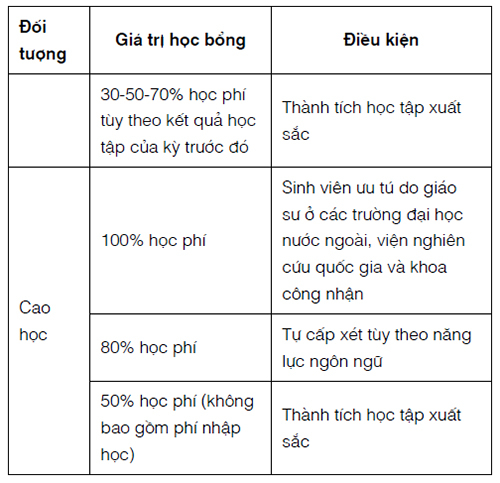

Chúng tôi bị quấy phá bởi bọn trộm cướp và hải tặc, chúng cướp bóc và tàn phá tất cả. Cái tổng nơi tôi cư ngụ, ở ngõ vào đất Chân Lạp, bị chúng tràn vào quấy phá.
Pierre-Marie Le Labousse*.
Ngay lúc người Việt Cơ Đốc giáo và những nhóm sắc tộc không phải là người Kinh giữ một vai trò quan trọng trong thời kỳ Tây Sơn, những nhóm khác sống bên lề xã hội cũng thế, không ai tạo được nhiều ấn tượng hơn những kẻ lang thang, những băng cướp và đám hải tặc. Mặc dù phần lớn các tài liệu của nhà Tây Sơn không nói tới sự hiện diện và vai trò của những nhân tố như thế, một cuộc khảo sát tỉ mỉ hơn các sử liệu và đặc biệt là các chứng cứ do các nhà quan sát người Âu đưa ra cho thấy rằng các nhóm sống bên lề xã hội này giữ những vai trò quan trọng trong quân đội Tây Sơn. Khi bản thân các nhà lãnh đạo Tây Sơn nuôi khát vọng chính trị vượt lên trên nghề ăn cướp đơn thuần, phong trào của họ thường được mở rộng một cách đột ngột bởi có sự tham gia của các băng cướp. Có vẻ như nhà Tây Sơn đã chấp nhận, và thậm chí có lúc chào đón, sự tham gia của những phần tử ngoài vòng pháp luật như thế, vì gần như lúc nào họ cũng cần bổ sung binh lính. Cho dù việc liên kết với các băng cướp có thể làm tổn hại mối quan hệ giữa họ với giới nông dân, cũng có nhiều trường hợp các lãnh tụ Tây Sơn nhìn thấy lợi ích của những mối quan hệ như thế vượt quá cái giá họ phải trả.
IV.3.1. Chuyện sống lang thang và cướp bóc ở Đại Việt cuối thế kỷ XVIII
Các băng cướp lan rộng vào những thập niên cuối cùng của thế kỷ XVIII có mối liên hệ trực tiếp với hiện tượng “du thủ du thực” - là hành vi của người dân rời xa nông trại và nhà cửa của họ. Nhiều người dân Việt đã ra đi vào thời kỳ này, tẹo nên sự bất an và bất ổn. Hậu quả của nạn đói và việc nhà nước không có khả năng phản ứng một cách thỏa đáng với những cuộc khủng hoảng như thế đã góp phần rất lớn vào vấn đề người dân sống lang thang ở khu vực nông thôn, khích động những cuộc nổi dậy trên diện rộng của người nông dân Đàng Ngoài từ thập niên 1720 đến thập niên 1760. Mặc dù những cuộc nổi dậy này đã bị ngăn chặn vào cuối thập niên 1760, vấn đề sống lang thang của người dân không dễ dàng được giải quyết như thế. Năm 1780, một quan chức khả kính của triều đình là Ngô Thì Sĩ đã tiến hành một cuộc điều tra ở vùng đất phía bắc và vẫn còn nêu lên những vấn đề trên diện rộng. Ông cho biết rằng trong 9.700 ngôi làng ở vùng châu thổ sống Hồng, đã có hơn 1.000 nhà bị bỏ hoang hoặc không thể nộp thuế nổi. Ở Thanh Hóa, trên 20% các ngôi làng cũng ở trong tình trạng trên; ở Nghệ An, tỷ lệ đó là 16%1. Nạn đói nghiêm trọng và lụt lội vào đầu và giữa thập niên 1780 chỉ làm cho vấn đề càng trở nên nghiêm trọng hơn.
Những người thường xuyên di chuyển thường đi ngược lại quyền lợi của một nước sống về nông nghiệp. Những nước này muốn cư dân của họ sống trong làng mạc, nơi họ có thể được đếm số, đánh thuế, là đối tượng của những dự án lao động quốc gia và được giám sát. Một khi người dân rời bỏ làng mạc của họ, họ không còn sản xuất được nữa và đồng thời họ trở thành nguồn nhân lực (nam, đôi khi cả nữ) cho các nhóm, như trộm cướp, hoạt động bên lề xã hội. Vì thế sự lang thang và sự trộm cướp kích động lẫn nhau, tạo ra một vòng quay khiến chính quyền càng ngày càng khó phá vỡ. Như Michael Adas đã nhận xét:
“Mặc dù nhiều băng cướp gồm những tên tội phạm chuyên nghiệp, vài người trong số họ thừa hưởng cách sống từ cha ông họ khi đi buôn bán, một số khác trở thành cướp do muốn thoát khỏi những khó khăn của đời sống nông dân... Ở Java và Miến Điện, cũng như ở Trung Hoa và Đại Việt, sự phát triển của các băng cướp vượt qua giới hạn thông thường là một trong những dấu hiệu chủ yếu về một triều đại lúc suy tàn. Người nông dân lánh nạn hạn hán, đói kém và thuế má nặng nề thường tham gia những băng cướp có tổ chức”.
Tương tự như thế, Masaya Shiraishi đã viết: “sử biên niên của triều đình thường mô tả trong cùng một đoạn cả hai hiện tượng về việc người dân bỏ đi khỏi làng mạc của họ và sự lan tràn của nạn trộm cướp. Việc người dân bỏ đi là hậu quả của nạn nghèo đói chung ở xã hội nông thôn, và cũng đồng thời nó cung ứng một nguồn dự trữ nạn trộm cướp"*. Mặc dù cuộc nghiên cứu của Shiraishi tập trung vào một sự kiện sau thời kỳ Tây Sơn, những trường hợp tương tự vào cuối thế kỷ khá rõ ràng. Có thể tình trạng người dân bỏ đi và xiêu tán còn gay gắt hơn vào thời kỳ trước đó.
Như Shiraishi đã viết, những kè sống ngoài vòng pháp luật và trộm cướp luôn là nét đặc trưng của khung cảnh tiền thực dân ở Đại Việt, và điều không có gì đáng ngạc nhiên là những nhóm như thế sinh sôi nảy nở ở những vùng mà sự kiểm soát của chính quyền yếu kém nhất, trong đó bao gồm khu vực duyên hải nam-trung, nơi nhà Tây Sơn nổi dậy. Giặc cướp là một hiện tượng phức tạp đối với người dân nông thôn. Chúng rõ ràng đã tạo ra một gánh nặng cho những người dân bị cướp bóc, trong khi chúng tiêu biểu cho con đường dẫn đến sự tồn tại về mặt kinh tế cho những người tiến hành các cuộc tấn công. Vì thế, Shiraishi đã lập luận: "Mối quan hệ của dân làng (và đặc biệt hơn nữa là những viên chức ở làng) và các băng cướp, những kẻ trộm cắp, và những kẻ sống lang thang thường mâu thuẫn nhau, cũng như mối quan hệ giữa chúng với chính quyền cũng mâu thuẫn nhau. Trong một số trường hợp, dân làng không tiếp xúc và chống lại các băng cướp, nhưng trong một số trường hợp khác, họ cố gắng thương thảo và sống chung với chúng. Trong cả hai trường hợp trên, họ có cùng một mục tiêu: tự bảo vệ mình và tồn tại trong một xã hội đầy biến động”.
Như thế, đối với một người bình thường, cuộc nổi dậy của nhà Tây Sơn, và sự rối loạn trật tự mà họ gây ra, có thể tạo ra vừa là một cơ hội lớn, vừa là một tai họa nặng nề. Những ai nhìn thấy đó là cơ hội thường sống trong nguy khốn và coi việc ngả về bọn giặc cướp là cách tương đối dễ, vào một thời kỳ mà trật tự chính thức không theo quy tắc tốt đẹp nào. Tuy nhiên, với những người không bị quyến rũ bởi những cơ hội như thế, sự nổi dậy của nạn trộm cướp có nghĩa là sự gia tăng tương ứng những hiểm nguy của chính họ. Như một giáo sĩ người Âu đã nhận xét ngắn gọn vào năm 1786: “Hai phần ba cư dân của vương quốc đã trở thành giặc cướp và một phần ba còn lại rơi vào nỗi thống khổ lớn lao”.
Giặc cướp đã là mối quan tâm lớn lao trong những năm đầu của nhà Tây Sơn, với những cuộc tấn công vào đầu thập niên 1770 làm cho dân làng và người nông dân giảm sút nghiêm trọng khả năng thực hiện công việc hàng ngày. Ở một vài khu vực giữa Đàng Trong vào thập niên 1770, các cuộc tấn công của giặc cướp, một số tiến hành một cách trơ tráo giữa ban ngày, đã diễn ra thường xuyên đến nỗi người nông dân bị buộc phải bỏ cả việc đồng áng. Viết năm 1775, giáo sĩ Pháp Jean Labartette kể rằng có rất nhiều băng cướp trong khu vực nơi ông ta sinh sống, và “mỗi băng cướp thường có từ 30 đến 40 tên, trong số đó, không một người nào là không sẵn sàng sát hại những người khác”. Cộng đồng cư dân địa phương đôi khi kết hợp lại trong một cuộc đấu tranh chung chống những băng cướp như thế, chúng đang lan tràn không chỉ ở Đàng Trong, mà đặc biệt hơn, còn ở Đàng Ngoài. Một giáo sĩ người Âu mô tả những động lực của cuộc tấn công một ngôi làng của người Cơ Đốc giáo ở phía bắc vào năm 1785:
“Ngày 8 tháng 3, hai trong số những người hầu của ông ta bị bắt cùng với bốn tín đồ Cơ Đốc giáo ở một nơi khác trong huyện của ông; bắt họ là một băng cướp đã đốt cháy nhà thờ, nhà ở của ông và tám ngôi nhà khác; khi những cư dân ở khu này tìm cách bắt giữ được hai trong số những kẻ bất lương trên, hai ngày sau, đồng bọn cướp quay lại với nhân số khoảng 400 người, quyết giải cứu các tù nhân; chúng cướp phá làng mạc, lấy đi gạo, đồ đạc trong nhà, quần áo, súc vật, gia cầm, và nói chung tất cả những gì mà những người dân nghèo này có thể sở hữu”*.
Việc rắc rối này cho thấy rõ về sự tàn phá mà những băng cướp đó có thể gây ra cho các làng mạc và tình trạng bất ổn mà dân làng thường trải qua. Trường hợp này cho thấy rằng chống lại chúng có thể làm cho vấn đề càng trầm trọng thêm.
IV. 3.2. Các băng cướp và chính quyền thời Tây Sơn
Sự nổi dậy của nhiều băng cướp đưa các bộ máy cầm quyền chính trị vào thế tiến thoái lưỡng nan; họ buộc phải tìm những phương tiện hữu hiệu để khắc phục các hậu quả dai dẳng của sự việc này, với những phương sách thường là có giới hạn. Đôi khi chính quyền hành động để tiêu diệt những băng cướp đặc biệt, tùy vào từng trường hợp và những tội ác chúng gây ra. Những lúc khác, và có lẽ thường xuyên hơn, chính quyền chọn cách hợp tác với các băng cướp hay những nhóm nổi loạn thay vì đàn áp chúng. Các chọn lựa này đơn giản hơn, ít tốn kém hơn, và cuối cùng tỏ ra có hiệu quả hơn trong việc kiềm chế, nếu không giải quyết dứt khoát được vấn đề. Cách kết nạp tốt nhất những kẻ sống ngoài vòng pháp luật hay những kẻ nổi loạn thường là tuyển mộ họ vào trong quân đội. Ý tưởng tuyển bọn cướp vào quân ngũ chính qui có một lịch sử lâu dài và có lẽ tồn tại ở bất cứ nơi nào có giặc cướp lan tràn. Như Elizaheth Perry đã chỉ ra trong trường hợp người Hoa: “việc chính quyền tuyển mộ những đầu đảng cướp diễn ra thường xuyên ở Trung Hoa cổ. ‘Bình định' hoàn toàn bằng địa vị chính thức là chiến thuật phổ biến của chính quyền khiến cho không ít các đầu đảng cướp coi cái nghề nghiệp ngoài vòng pháp luật của họ là phương tiện nhanh chóng dẫn đến chốn quan trường”*.
Chúng ta chỉ cần nhìn vào mối quan hệ giữa nhà Trịnh và nhà Tây Sơn để thấy động lực này đã tác động lên mối quan hệ giữa chính quyền và các băng cướp ở Đại Việt như thế nào. Khi quân Trịnh tấn công Đàng Trong lần đầu vào năm 1774, họ đã lấy lý do triệt hạ những kẻ nổi loạn ấp Tây Sơn, và nhắc đến người anh cả Tây Sơn như là “Biện Nhạc ngông cuồng”*. Tuy nhiên, khi tình thế thay đổi, và quân Trịnh bị sa lầy ở phía nam, những tướng cầm quân của họ đã có một cái nhìn khác về tình hình lúc bấy giờ. Các tướng Trịnh quyết định rằng thay vì tiến hành một chiến dịch sẽ phải đối mặt với nhiều khó khăn, cần khôn ngoan đạt đến một sự dàn xếp với quân nổi loạn. Vì thế, như chúng ta đã thấy ở Chương II, các quan chức của họ Trịnh đã đi đến một thỏa hiệp với các lãnh tụ Tây Sơn, đồng ý thu nạp họ vào hàng ngũ quân đội Đàng Ngoài, lúc đầu cử Nguyễn Nhạc làm tướng quân, sau đó là quan trấn thủ với tước Quận công. Bằng mưu chước đơn giản đó, quân Tây Sơn đã từ đạo quân nổi loạn ở Đàng Trong chuyển thành một đạo quân Trịnh. Khi trường hợp này được làm lộ rõ, ranh giới giữa kẻ nổi loạn, kẻ cướp và quan chức chính quyền thường rất mỏng manh, được quyết định tùy vào tình thế hơn là chính sách.
Như ví dụ về sự tương tác giữa nhà họ Trịnh và nhà Tây Sơn đã chỉ rõ, việc kết nạp các băng cướp không phải là điều chưa từng được biết đến, và có lẽ cũng không phải ít xảy ra ở Đại Việt. Năm 1783, tức mấy năm sau khi họ Trịnh chuyển quân Tây Sơn từ những kẻ nổi loạn thành đạo quân của triều đình, một giáo sĩ sống trên lãnh thổ của chúa Trịnh đã viết rằng: “tại trấn mà tôi đang ở, nơi có rất đông tín đồ Cơ Đốc giáo, chúng tôi đã được cử đến một viên trấn thủ mới vốn là đầu lãnh bọn cướp, người đã cung hiến một nhóm gồm 500 tên cướp, lấy ra từ những thành phần cặn bã của xã hội, chỉ biết làm mỗi cái việc trộm cướp”.
Trong một trường hợp khác, một giáo sĩ viết rằng một đầu đảng cướp đã tiếp cận với một quan trấn thủ, yêu cầu ban lệnh chính thức bắt giữ một giáo sĩ người Âu đang sống ở địa phương. Khi lệnh chưa ban ra thì sự kiện này cho thấy mối quan hệ mật thiết giữa viên trấn thủ với đầu đảng cướp. Thật vậy, cùng tài liệu này, bằng những từ ngữ phổ biến hơn, cho rằng: “ở đây ngự trị một lòng tham vô độ làm sản sinh và phát triển không ngừng vô số các băng cướp được khuyến khích bởi sự đảm bảo rằng chúng không bị trừng phạt và thường noi theo gương của những người tự xưng là quan lại”. Hiện tượng này được mô tả trở lại vào năm 1786, trong thời gian quân Tây Sơn tấn công Đàng Ngoài. “Một kẻ phiêu lưu, từng là Vua Trộm cắp, đã được chúa cất nhắc lên hàng quan lại cao cấp, người mà chúa đã cử một người anh (em) của ông sang cùng chỉ huy đạo quân trộm cướp của y, bỗng nhiên biến thành người bảo vệ đất nước”. Kiểu biến hình từ trộm cướp sang “người bảo vệ đất nước” xảy ra rất thường trong thời kỳ Tây Sơn, nêu bật mối quan hệ lâu dài, mâu thuẫn tồn tại giữa nhà nước, làng mạc và giặc cướp ở nông thôn.
Giống như họ Trịnh, thái độ của các lãnh tụ Tây Sơn đối với các băng cướp được dẫn dắt chủ yếu bởi mưu mô thủ đoạn. Trong những ngày đầu của cuộc nổi dậy, họ thường xuyên kêu gọi sự hỗ trợ từ các băng cướp và thiết lập liên minh với những bọn cướp hoạt động trên vùng cao nguyên, về sau này, có lẽ những liên minh như thế đã gợi ý cho một quan sát viên người Âu ám chỉ Nguyễn Nhạc như là “chúa đảng cướp”. Các băng cướp đặc biệt có ích cho nhà Tây Sơn trong những chiến dịch ban đầu của họ nhằm tịch thu tài sản của lớp người ưu tú về kinh tế bao gồm những địa chủ giàu có và không được người dân yêu thích. Trong nhiều trường hợp, những người này là mục tiêu cố hữu của bọn cướp. Một tài liệu có nêu lên rằng khi cuộc nổi dậy mới bắt đầu, Nhạc đã có 23 hay 24 băng cướp được sử dụng như cốt lõi của phong hào, trong khi một tài liệu khác đưa ra tên của hai hùm băng cướp là Nhưng Húy và Tứ Linh, tham gia trong cùng một thời kỳ. Một truyền thuyết dân gian kể rằng viên tướng nổi tiếng của Tây Sơn là Võ Văn Dũng từng là một đầu đảng cướp nổi tiếng, do chính sách tàn bạo của Trương Phúc Loan mà buộc phải bước vào cuộc đời tội phạm trước khi được Nguyễn Huệ tuyển mộ. Mức độ dính líu của các băng cướp vào những năm đầu của cuộc nổi dậy và hành động của quân Tây Sơn khiến các nhà quan sát người Âu ghi chép rằng họ khó mà phân biệt giữa quân Tây Sơn và các báng cướp hoạt động ở Đàng Trong lúc bấy giờ. Có vẻ như người Việt ở nông thôn cũng có những khó khăn tương tự. Người ta kể rằng quân Tây Sơn đã phải “tuyên bố rằng họ không phải là giặc cướp”, ám chi rằng sự xuất hiện hay hành động của họ, hoặc cả hai, thường thì khó phân biệt với hành động của những người được coi là các băng cướp. Những tài liệu sau này viết về các vụ cướp phá của quân Tây Sơn cho thấy rằng sự phân biệt giữa đạo quân Tây Sơn được cho là “công chính” với các đối tác của họ là những băng cướp tỏ ra khá mơ hồ.
Khi quân Tây Sơn di chuyển ra Đàng Ngoài, họ cũng thiết lập mối quan hệ với các băng cướp ở vùng này. Với tính cơ động và tình trạng không chính qui, các băng cướp và những thành phần khác tương tự trong xã hội Đàng Ngoài có vẻ thích hợp hơn những người nông dân chuyên về nông nghiệp trong việc tự nguyện gia nhập vào đạo quân Tây Sơn. Các chiến dịch của nhà Tây Sơn mang đến một cơ hội thu lợi cá nhân, khiến cho các băng cướp trở thành những ứng cử viên lý tưởng của quân đội Tây Sơn. Hơn nữa, do các lãnh tụ Tây Sơn, không kể Nguyễn Hữu Chỉnh, không hiểu biết những thông tin thực tế về khu vực phía bắc, vì thế họ cho là hợp lý khi kết nạp những phần tử sống ngoài vòng pháp luật, do những kẻ này hiểu biết về địa thế và các điều kiện của địa phương. Ngay cả Nguyễn Hữu Chỉnh cũng tuyển mộ một số lượng lớn những kẻ cướp trong quân đội của ông ta. Như một giáo sĩ đã viết về đạo quân của Chỉnh: “đối với một người dân Đàng Trong, đôi khi người ta có thể đếm 20 hay 30 tên cướp ở Đàng Ngoài như thế, chúng không bằng lòng với sự đền bù dành cho chúng, vẫn hành xử theo như tên gọi của chúng, gieo rắc nỗi kinh hoàng cho người dân để cướp lấy nhiều tiền". Những sự liên kết với giặc cướp như thế tỏ ra đặc biệt hữu ích đối với các lãnh tụ Tây Sơn khi họ tiến ra Đàng Ngoài, cho phép họ tiếp xúc với vùng đất có thể khó khăn đối với họ.
Việc các lãnh tụ Tây Sơn thiếu thông tin chung về Đàng Ngoài, và sự ngây thơ của họ về vấn đề giặc cướp ở đây được tiết lộ trong một bản tường thuật ngắn của sách Hoàng Lê nhất thống chí. Theo chuyện kể này, trên đường đi, Nguyễn Nhạc gặp một nhóm người than thở với ông ta là họ mất hết của cải về tay một băng cướp ở Nghệ An dưới sự chỉ huy của một người nổi tiếng tên Chưởng Tiến. Nhạc hỏi họ về địa điểm của bọn cướp rồi cho quân vào rừng tìm chúng. Không bao lâu sau, quân lính Tây Sơn bị nhử vào rừng và bị bọn cướp phục kích, chúng rút kiếm ra và tuyên bố chúng là những người theo Chưởng Tiến. Chúng xông vào tấn công quân Tây Sơn, giết được nhiều người và buộc những người còn lại phải chạy thoát. Nhạc cảm thấy bị đe dọa nghiêm trọng và về sau quân của ông ta rất sợ phải ngủ trong nhà dân, thích chọn ngủ bên ngoài những ruộng lúa hơn. Trải qua một kinh nghiệm như thế, ta sẽ không lấy làm ngạc nhiên khi thấy nhà Tây Sơn tìm đồng minh với các trùm băng cướp hơn là có ý định thách thức chúng ngay trên lãnh địa của chúng.
Mặc dù các lãnh tụ Tây Sơn chính thức tuyển mộ các băng cướp vào quân đội của họ, lập liên minh với các nhóm cướp bóc và thậm chí sử dụng cả bọn du côn cho làm quan, các lãnh tụ quân nổi dậy cũng được cảnh báo rằng việc khuyến khích giặc cướp có nguy cơ khiến cho nhiều người dân nông thôn xa lánh họ. Đôi lúc nhà Tây Sơn tìm sự ủng hộ của những người dân thường xuyên sợ hãi các cuộc tấn công của bọn cướp, nhà Tây Sơn từng bước tiêu diệt bọn cướp thay vì tạo sự dễ dàng cho chúng hoạt động. Chẳng hạn như vào năm 1776, Nguyễn Nhạc gửi một thư cho cấp chỉ huy của ông ta là chúa Trịnh, loan báo rằng một trong những ý định của ông ta là tiêu diệt bọn cướp đang hoạt động trong vùng Quảng Ngãi: “Các băng cướp trong vùng đó đã chuyển thành nhiều nhóm. Tất cả những người dân ở ba huyện đó đều bị quấy rối. Khi vừa nghe tin này, tôi lâm thời để quân của mình lại đó để bắt giữ những tên cướp kia, bởi vì tôi mong muốn người dân được sống trong yên bình”. Tất nhiên, khó mà xác định được xem nhà lãnh đạo Tây Sơn có thực sự làm theo sáng kiến này không hoặc là bức thư trên có phản ảnh điều ông ta nghĩ là chúa Trịnh muốn nghe hay không. Với tư cách là một đại diện về quân sự của chúa Trịnh, hầu như chắc chắn là ông ta muốn duy trì hòa bình, trong đó có việc tiến hành những cuộc tấn công để tiêu diệt giặc cướp. Từ đó, chúng ta biết được động lực giữa những người gìn giữ hòa bình và bọn cướp, rất có thể rằng câu trả lời của Nhạc đối với vấn đề cướp bóc đơn giản là kết nạp chúng vào trong quân đội của ông ta.
Mười năm sau, khi quân Tây Sơn di chuyển ra bắc vào năm 1786, các nhà lãnh đạo của họ lại tiêu diệt nạn cướp bóc để đánh bóng danh tiếng là những người bảo vệ trật tự chính trị. Các nhà lãnh đạo Tây Sơn đàn áp giặc cướp, trong đó có việc sử dụng hình thức công lý chiếu lệ và xử tử bọn cướp (hoặc những người đơn giản chỉ bị tố cáo là ăn cướp) cũng như những kẻ bị phát hiện đang quấy rối người dân địa phương. Ấn tín chính thức của các nhà lãnh đạo Tây Sơn phản ánh tính cao thượng trong sứ mạng của họ: phụng thiên phạt tội (tuân theo lệnh trời trừng phạt kẻ có tội). Trong lúc từ “tội phạm" khắc trên ấn có lẽ nhằm ám chỉ trực tiếp chúa Trịnh, cũng có lý khi cho rằng ý niệm này cũng được áp dụng rộng rãi hơn cho những thành phần khác trong xã hội. Một khi Nguyễn Huệ nắm lấy quyền hành với danh nghĩa Hoàng đế Quang Trung, việc phục hồi trật tự xét ra có tính cần kíp hơn bao giờ hết so với việc giải quyết vấn nạn trộm cướp, điều này phản ánh trong một chỉ dụ năm 1789 của ông kêu gọi người dân quay về làng mạc và bắt đầu lại việc cày cấy trên vườn ruộng của họ. Trong một nỗ lực xa hơn nhằm lập lại sự ổn định, vua Quang Trung cũng kêu gọi “mỗi tổng đều có sai một vệ binh đi tuần thám ban đêm, vì thế mà đạo tặc đều yên, cửa làng khỏi phải đóng”.
Tuy nhiên, những chứng cứ còn tồn tại cho thấy rằng các băng cướp thường có thể thoát ra khỏi những định chế tư pháp còn phôi thai do nhà Tây Sơn thiết lập. Trong bất cứ trường hợp nào, có vẻ như nhiều quan lại trong chế độ đó coi các băng cướp là một nguồn lợi tiềm tàng hơn là một tai ách xã hội. Một số người còn thỏa hiệp với bọn cướp, cho phép chúng tự tung tự tác để đổi lấy việc chia chác với quan lại địa phương của cải do chúng cướp được. Những người khác thì bắt giữ bọn cướp, không phải như một toan tính có hệ thống nhằm kiềm chế những hành động quá đáng của chúng, mà đúng hơn như là một cách moi tiền để đổi lại việc thả chúng ra. Như một giáo sĩ đã viết vào cuối thập niên 1790:
Tất cả các quan lại tìm cách làm giàu từ nguồn chi trả của người nghèo. Công lý được bán dựa vào trọng lượng vàng, với cán cân luôn nghiêng về phía những người có nhiều tiền nhất. Xứ sở đầy trộm, cướp và những kẻ lêu lổng, và khi các quan lại có thể bắt giữ chúng, họ luôn luôn nhận tiền để thả chúng, không như những người nghèo bị hình phạt, còn người giàu không sợ bị cướp hay bị sát hại.
Cách hành xử này không phải là không giống cách đã áp dụng với người Cơ Đốc giáo, như chúng ta đã thấy, họ thường bị bắt giữ rồi thả ra để đổi lấy nhiều tiền trả cho quan chức có vấn đề.
IV.3.3. Quan hệ giữa nhà Tây Sơn và hải tặc Trung Hoa
Nhà Tây Sơn dưới triều đại Quang Trung cũng phát triển mối liên minh đáng chú ý với hải tặc Trung Hoa ở vùng biển Đông. Đám cướp biển này hoạt động từ duyên hải miền Trung đến vịnh Bắc phần ngày nay và đến tận tỉnh Chiết Giang, trở thành yếu tố trung tâm trong chiến lược hải quân của Tây Sơn và trong nền kinh tế của chế độ này giữa những năm 1786 và 1802*. Tác phẩm hay của Dian Murray nhan đề Pirates of the South China Coast, 1790-1810 (Hải tặc vùng duyên hải Nam Trung Hoa, 1790-1810) đã mô tả với những chi tiết đáng chú ý cách mà chính quyền của vua Quang Trung đã sử dụng để hợp nhất nhiều nhóm hải tặc trong hàng ngũ quân đội của ông, và sự thảo luận của chính tôi về vấn đề đã được Murray vẽ ra một cách bao quát trong công trình nghiên cứu của bà, trong một phạm vi nhỏ bé hơn tác phẩm của Robert Antony.
Vùng duyên hải được bảo vệ bao quanh vịnh Bắc phần và trải dài từ Quảng Đông và Macao, dọc theo bờ biển của Đại Việt, là khu vực lý tưởng của bọn hải tặc. Quan trọng nhất, đây là vùng có một lượng tàu buôn lớn ra vào - cả tàu của dân địa phương lẫn một số lượng ngày càng nhiều các tàu buôn châu Âu - với tất cả các loại tàu có thể nghĩ ra được. Kế đó, địa thế của vùng này rất thích hợp với bọn hải tặc. Biển nông tương đối yên tĩnh, được che chở bởi một vùng biển sâu hơn nằm bên ngoài thềm lục địa. Cũng có rất nhiều vịnh và đảo nhỏ được sử dụng làm chỗ trú ẩn cho những kẻ tìm cách tránh tiếp xúc với chính quyền và để rút lui nhanh chóng. Thật vậy, những hòn đảo này đôi khi được mệnh danh là "đảo Hải tặc” trên những bản đồ của người châu Âu vào cuối thế kỷ XVIII, đầu thế kỷ XIX. Sau năm 1760, khi triều đình nhà Thanh ra lệnh cho mọi hoạt động thương mại của người châu Âu phải thông qua một cảng duy nhất ở Quảng Đông, cả hai yếu tố này kết hợp với nhau thành một hành lang tập trung các hoạt động thương mại phù hợp với những điều kiện tốt nhất cho bọn hải tặc*. Vì thế, vào thời điểm quân Tây Sơn tiến ra Đàng Ngoài năm 1786, bọn hải tặc đã được tổ chức vững chắc ở vịnh Bắc phần. Hải tặc Trung Hoa lợi dụng sự che chở của vùng duyên hải Đại Việt ở phía nam biên giới với Trung Quốc và sử dụng Giang Bình*, trong trấn An Quang* ngay bên trong biên giới Đại Việt, để làm trung tâm hoạt động của chúng. Nằm trên một con sông cạn lòng và bị chia cắt với bên trong bởi địa thế hiểm trở, Giang Bình là nơi rút lui lý tưởng*.
Vùng duyên hải này, với cư dân sống về nghề biển, rất thích hợp cho việc sản sinh ra những người sẵn sàng chuyển sang làm cướp biển. Đã có sẵn một cộng đồng người rộng lớn hoặc sống trên thuyền hoặc dùng thuyền để kiếm sống, điều đó có nghĩa là việc chuyển sang làm hải tặc - hoặc là một nghề hẳn hoi, hoặc đơn thuần là một phương cách tạm thời để kiếm thêm thu nhập - là khá đơn giản. Áp lực kinh tế ở vùng này khá nặng nề, và nhiều người, trong đó có ngư dân sống bên bờ vực của cái chết. Như Murray đã chỉ rõ: “không thể cất đi gánh nặng tài chánh, các ngư dân thường buộc phải bổ sung thu nhập của họ bằng những hoạt động ngoài lề như buôn bán nhỏ. Và như thế, kết quả một đời sống khốn khổ đến mức đối với nhiều người, một vụ đánh cướp thành công ngoài biển là hi vọng duy nhất để có một đời sống tốt hơn”. Hoặc như vua Quang Trung nêu ra điều này trong tuyên bố đầu tiên nhằm khuyến dụ bọn hải tặc tham gia vào quân đội của ông:
“Các ngươi hàng chục năm nay ẩn hiện nơi góc bể, tụ tập bè đảng, lấy việc cướp bóc để sinh nhai, cũng là có chỗ bất đắc dĩ, hoặc vì đói rét bức bách, hoặc vì bạo ngược xua đuổi, mới đến nương thân nơi sóng gió, không có lối thoát ra”.
Dù cho hoàng đế Tây Sơn có cho rằng nhờ đến hải tặc là sự lựa chọn một phương sách cuối cùng, rõ ràng là đối với vài người, và có lẽ nhiều người, quyết định tham gia vào nghề cướp biển dựa trên tính giáo điều hơn là sự tuyệt vọng. Trong bất cứ trường hợp nào, sự chọn lựa ấy là không thể thay đổi, cũng không thể loại trừ. Các ngư dân có thể và đã chuyển từ đánh bắt cá sang hải tặc cùng một phương cách như những người tương ứng với họ ở nội địa chuyển từ canh tác sang cướp bóc.
Nhà Tây Sơn tuyển mộ giặc cướp theo nhiều cách khác nhau, cả trực tiếp lẫn gián tiếp. Tuyển mộ gián tiếp dưới hình thức ban bố rồi lưu hành những chỉ dụ kêu gọi những người đàn ông tham gia vào sự nghiệp của nhà Tây Sơn. Các chỉ dụ hoàng đế Tây Sơn ban hành do Ngô Thì Nhậm soạn thảo, đầy ắp những lời lẽ hoa mỹ, khoa trương nhằm thỏa mãn tâm tư của giới nho sĩ đang tham gia vào các nỗ lực tuyển mộ này. Vì thế, chỉ dụ đầu tiên trong những chỉ dụ trên bắt đầu*:
“Trẫm nghe nói, gió to không thổi hết buổi sáng, mưa lớn không kéo suốt cả ngày. Đạo của trời là thế. Cho nên người con trai tốt không thể suốt đời làm ác. Người xưa, có kẻ khởi thân là giặc cướp, sau làm nên danh tướng, chẳng qua chỉ vì dám sửa lỗi, dũng cảm làm việc thiện, thấu suốt các lẽ nên bỏ nên theo, biết chọn điều phải mà làm, vì vậy, tên tuổi để lại trong sử sách, công lao được chép ở khoán thư”.
Cố nhiên là nhà Tây Sơn tìm cách tán tỉnh các hải tặc để chúng phục vụ cho chế độ của họ, sử dụng những câu nói của Khổng tử nhằm tha thứ cho các hành động phạm pháp của chúng và gợi ý rằng việc làm của chúng có thể vừa tạo lập cơ hội giở sang một trang mới và làm nên danh tiếng của chúng.
Mối quan tâm của nhà Tây Sơn trong việc tuyển mộ các hải tặc phản ánh trong hai chỉ dụ ban hành sau đó nhằm nỗ lực thu hút nhiều hơn những người như thế*. Như lời kêu gọi đầu tiên, hai chỉ dụ sau này miêu tả sự chọn lựa tham gia vào phong trào Tây Sơn như là cách quay lưng lại với cuộc đời tội lỗi và cướp bóc trong lúc hướng về công việc cao cả của chính quyền. Tuy nhiên, sẽ không chính xác nếu cho rằng tham gia phong trào Tây Sơn là từ bỏ công việc cũ của chúng. Trong lúc các nho sĩ soạn những chỉ dụ nhân danh các nhà lãnh đạo Tây Sơn có thể muốn tin rằng phong trào này đang tìm cách cải sửa những tên cướp biển “lầm lạc”, thì thực tế lại hoàn toàn khác hẳn. Chính xác là các hải tặc được tuyển mộ do kinh nghiệm của chúng, khả năng chúng cung cấp cho chính quyền Tây Sơn những của cải cướp được và kỹ thuật chiến đấu của chúng.
Hiệu quả hơn cách lưu hành các chỉ dụ là sự tuyển mộ trực tiếp các hải tặc thông qua nỗ lực cá nhân của những người đã tham gia vào phong trào Tây Sơn. Nhân vật cốt lõi trong những nỗ lực tuyển mộ cá nhân này là Trần Thiên Bảo, người mà nhà Tây Sơn đã bắt giữ vào năm 1783*. Ông ta được phong chức tổng binh và một người bạn của ông ta là Lương Khuê Hiệp* được phong tước Hiệp Đức hầu. Theo Murray, cả hai chiến đấu trong cuộc tiến công của quân Tây Sơn về phía bắc*, chiếm lấy Phú Xuân và Thăng Long. Và bà đã viết, sau đó, họ trở thành cột trụ trung tâm trong cơ cấu quân sự ở phía bắc của nhà Tây Sơn, đặc biệt sau năm 1788. Sau khi đã phong cho Trần Thiên Bảo tước đức hầu , nhà Tây Sơn ban cho ông ta quyền được tuyển mộ bổ sung các hải tặc nhằm mục đích chung và được phong địa vị cho những lính tân tuyển. Có vẻ như Thiên Bảo làm việc đó với nhiều hứng thú và đem được nhiều tên cướp biển phục vụ cho phong trào Tây Sơn. Đó là những người tìm thấy các việc làm như thế là phương tiện thuận lợi nhất để được bảo vệ trước nguy cơ bị trừng trị bởi triều đình Trung Hoa trong lúc tham gia vào những cuộc cướp bóc có tổ chức nhân danh người Việt, về sau, hải tặc Trung Hoa tham gia vào tất cả những chiến dịch quân sự quan trọng của nhà Tây Sơn vào thập niên 1790, phục vụ chính quyền quân nổi dậy cho đến những ngày cuối cùng.
Phẩm cấp trong quân đội và chức vụ chính trị cao là những mưu chước tuyển mộ đặc biệt đắc dụng, vì họ ban cho cả uy tín lẫn tính hợp pháp. Như Murray đã viết: “việc kết hợp với nhà Tây Sơn mang lại cho những kẻ cầm đầu hải tặc phương tiện để kết nạp thêm những người ngoài vào trong tổ chức của chúng. Thẩm quyền ban hành qui chế phong chức tước được chính quyền công nhận là một công cụ tuyển mộ quan trọng”. Những người từng là cướp biển đơn thuần, không có phẩm cấp hay địa vị nay được công nhận là tướng lĩnh, quan trấn thủ, hầu tước, có người thậm chí còn được phong vương. Một tay cầm đầu hải tặc tên Mạc Quan Phù* được phong tước Đông Hải vương, trong khi một người khác là Ô Thạch Nhị* được phong Bình Ba vương năm 1797. Giữa thập niên 1770, các nhà lãnh đạo Tây Sơn đã triển khai sức mạnh và địa vị từ những chức vụ và cương vị chính thức do chúa Trịnh ban cho, thì các hải tặc Trung Hoa cũng có được tầm cỡ từ những chức vụ mà nhà Tây Sơn ban cho chúng. Sự hợp pháp hóa này quan trọng trong mối quan hệ giữa bọn hải tặc với nhau và với chính quyền Trung Hoa, nhưng nó cũng có ích cho những nhà lãnh đạo Tây Sơn, vì nó đưa ra một sự giải thích về cách hành xử trong mối quan hệ giữa họ với những kẻ ngoài vòng pháp luật này.
Đội thủy quân của hải tặc phục vụ trong quân đội Tây Sơn khá quan trọng, một mặt với Mạc Quan Phù chỉ huy hơn 1.000 người, mặt khác với một người cầm đầu hải tặc là Trịnh Thất*, chỉ huy một lực lượng hơn 200 tàu thuyền. Thủy quân với tầm cỡ đó rất hữu dụng cho nhà Tây Sơn, đảm đương nhiều chức năng cốt yếu cho triều đại Quang Trung. Trước hết, hải tặc giúp ông mở rộng sức mạnh thủy quân, bổ sung khả năng tuần tra vùng duyên hải từ biên giới với Trung Quốc đến vùng cực nam Qui Nhơn*. Quan trọng không kém là việc cấm chỉ những cuộc lưu thông trên biển dưới mọi hình thức di chuyển: đi, đến và chạy dọc theo vùng duyên hải Đại Việt; đối tượng bị cấm bao gồm thương nhân Trung Quốc, quan lại nhà Nguyễn, các giáo sĩ đi từ Macao, cùng các tàu thuyền của người châu Âu thuộc mọi quốc tịch. Thuyền của bọn hải tặc hình thành một lớp bảo vệ an ninh hữu hiệu cho triều đình Tây Sơn. Hải tặc hoàn toàn không thể bắt dừng lại những tàu thuyền đi ra hay đi vào vùng do Tây Sơn kiểm soát, nhưng chúng có thể thu hẹp đường thông thương của những tàu thuyền này.
Những cuộc tuần tra của hải tặc giúp ngăn chặn hoạt động của những kẻ do thám của chúa Nguyễn trong vùng đất do nhà Tây Sơn quản lý, đồng thời ngăn ngừa những người phương Bắc đi về phía nam để gia nhập đạo quân của chúa Nguyễn. Chúng còn giúp nhà Tây Sơn cản trở các hoạt động tiếp tế của người Trung Quốc đi từ các cảng của họ đến Gia Định, tại đây, đồ tiếp tế có thể được sử dụng để hỗ trợ các nỗ lực quân sự của chúa Nguyễn. Những cuộc tuần tra này cũng ngăn trở các hoạt động của người châu Âu - bao gồm cả giáo sĩ và thương nhân - đi vào hay đi ra khỏi Đại Việt. Hạn chế hoạt động của những người này đặc biệt có lại cả hai mặt, do sự hiện diện lúc bấy giờ của các cố vấn người Pháp trong hàng ngũ quân Nguyễn, một sự hiện diện mà phía Tây Sơn không muốn nhìn thấy nó bành trướng thêm, và do mối đe dọa có thể nhận biết được từ các giáo sĩ người Âu là nguồn cung cấp tin tức tiềm tàng cho phía chúa Nguyễn. Nỗ lực quan trọng nhằm ngăn chặn hoạt động của những người này hoặc về hướng Gia Định ở phía nam hoặc về hướng Macao ở phía bắc, nơi tin tức cố thể chuyển cho đại diện của chúa Nguyễn.
Nỗ lực này cũng có những tác động quan trọng bên trong lãnh thổ Đại Việt, do hải tặc tuần tra từ vùng duyên hải vào đến Qui Nhơn khiến cho sự tiếp xúc giữa các vùng miền khác nhau trở nên khó khăn. Điều này đáp ứng được mục tiêu của nhà Tây Sơn, đặc biệt đối với hoạt động của con người hoặc thông tin giữa các lãnh thổ do họ và do chúa Nguyễn kiểm soát.
Được đánh giá cao do khả năng hạn chế các hoạt động của con người, bọn hải tặc cũng có ích về mặt tài chánh cho nhà Tây Sơn. Đổi lại với việc cung cấp cho hải tặc nơi trú ẩn an toàn trong vịnh Bắc phần, nhà Tây Sơn nhận được một tỷ lệ phần trăm những của cải mà tàu thuyền của chúng cướp được, về những của cải được đưa qua vùng biển này, hoạt động tuần tra có lợi rất nhiều cho cả hai phía. Cứ mỗi mùa xuân và mùa hè, các tàu hải tặc bắt đầu mùa cướp bóc, rồi khi mùa thu đến thì chúng quay về nơi trú ẩn an toàn. Murray viết rằng các hải tặc sẽ nộp của cải cướp được cho nhà Tây Sơn (ít nhất về mặt lý thuyết); Tây Sơn lại mang bán chúng ở Đại Việt rồi hoàn từ 20 đến 40% tiền thu được cho hải tặc. Gặp dịp hải tặc tịch thu được toàn bộ tàu, có ít nhất một trường hợp tàu được mang đến Phú Xuân, sử dụng trong đội thủy quân Tây Sơn. Đôi khi các lãnh đạo Tây Sơn ban ra những hướng dẫn đặc biệt cho đồng minh hải tặc của họ, chẳng hạn như yêu cầu chúng mở những chiến dịch cướp bóc trên đất Quảng Đông hay những tỉnh duyên hải khác của Trung Quốc. Trong những trường hợp khác, nhà Tây Sơn cung cấp tàu cho hải tặc và khuyến khích chúng dùng những tàu này để tuyển mộ thêm người vào hàng ngũ của chúng.

Hình 10: cửa sông Hồng dẫn vào kinh thành Thăng Long năm 1771. Bản đồ do Nicholas Beflin vẽ, theo đó sông Hồng chảy từ Vịnh Bắc phần đến kinh đô Thăng Long ở phía bắc, được ghi tên trên bản đồ là Cacho (Kẻ Chợ - ND). Các hải tặc Trung Hoa có thể ẩn lánh trên sông để tránh bị chính quyền nhà Thanh truy bắt.(Sưu tập của tác giả.)
Trong lúc bọn hải tặc được sự bảo trợ của nhà Tây Sơn đôi khi chỉ đơn thuần tịch thu của cải hay đòi tiền chuộc tàu, có những lúc khác chúng bắt cả khách bộ hành, người Việt cũng như người châu Âu. Một người Pháp chỉ được ghi tên là “Savard” bị một tàu hải tặc với thủy thủ đoàn cả người Việt lẫn người Hoa bắt giữ và bị giam giữ nhiều năm sau đó trên một hòn đảo và bị buộc phải làm việc khổ sai trên một tàu hải tặc. Những lúc khác, và có lẽ tùy vào mức độ phản kháng mà chúng đương đầu, bọn hải tặc có thể tàn sát tất cả thủy thủ của những chiếc tàu mà chúng gặp phải. Một giáo sĩ Pháp đã mô tả một cuộc tấn công của hơn mười tàu của bọn hải tặc người Hoa vào một tàu Anh nhỏ, dẫn đến việc bắt giữ và sau đó sát hại tám thủy thủ người Anh. Trong một hoạt động tương tự, cũng có hai người Bồ Đào Nha bị bắt giữ trên một hòn đảo gần đó, nơi có một nhóm nhỏ người Việt theo Cơ Đốc giáo mưu toan cứu họ. Việc cứu người thất bại, do tên đầu đảng cướp không chịu giao lại hai người đàn ông bị bắt, muốn đưa họ tới kinh đô Phú Xuân của nhà Tây Sơn, tất nhiên là với hi vọng được tưởng thưởng vì sự bắt giữ này.
Bọn hải tặc ven biển nôn nóng liên kết với nhà Tây Sơn, bởi vì sự liên kết này giúp chúng không bị các đạo quân Trung Hoa bắt giữ, tương tự việc có dính líu đến nhà Tây Sơn khiến triều đình nhà Thanh phải miễn cưỡng truy bắt hải tặc vì sợ làm mất lòng chính quyền mới của người Việt. Dù có sự miễn cưỡng này, triều đình nhà Thanh vẫn cảm thấy rất bất an trước việc nhà Tây Sơn chứa chấp hải tặc và nhiều lần muốn giải quyết vấn đề này. Tháng 5.1797, một giáo sĩ viết rằng người Trung Hoa đã cử 100 chiếc thuyền với mưu tính tiêu diệt bọn hải tặc ở ven biển được nhà Tây Sơn bảo trợ nhưng bọn chúng dễ dàng tẩu thoát, chạy vào nội địa theo nhiều con sông ở phía bắc Đại Việt. Hai tháng sau, cũng vị giáo sĩ này mô tả đầy đủ hơn các tình tiết của sự kiện cho thấy toan tính tiêu diệt hải tặc của nhà Thanh đã vô hiệu và vai trò của nhà Tây Sơn trong việc cản trở các nỗ lực của chính quyền Trung Hoa:
“Những người Trung Hoa các ông đến cùng với một đội tàu để bắt bọn hải tặc, nhưng tôi tin rằng họ không thể bắt được một lượng tàu hải tặc rất lớn. Các quan lại ở Đàng Ngoài giúp chúng chạy thoát và đánh lừa quan lại nhà Thanh bằng những lời nói xu nịnh, song không cho phép họ đi vào những con sông lớn dẫn đến kinh đô; sau một thời gian chờ xem nhà Tây Sơn có giải giao hải tặc cho họ không, người nhà Thanh rút đi. Về phần bọn hải tặc, chúng phối hợp với nhau, chạy dọc theo bờ biển đến Phú Xuân theo sự triệu tập của vua Quang Trung”.
Trong lúc rõ ràng là phía Đại Việt không bị đe dọa bởi hoạt động của thủy quân Trung Hoa, họ coi trọng mối quan hệ tốt đẹp với triều đình nhà Thanh và muốn tỏ rõ một phong cách hợp tác với nơi này. Vì thế, chính quyền Tây Sơn đã đáp ứng mối quan tâm của người Trung Hoa và thực hiện một vài động tác để chứng tỏ thiện chí bằng cách đàn áp đám hải tặc. Toan tính của phía Việt nhằm tiêu diệt các hoạt động của hải tặc chỉ là vẻ phô trương bề ngoài và không ảnh hưởng bao nhiêu đến hoạt động của những đồng minh của họ. Sau mỗi cuộc "đàn áp” như thế, đám hải tặc lại được tự do hoạt động như cũ. Người Trung Hoa không kiểm soát được tình hình của hải tặc cho đến khi nhà Tây Sơn không còn nắm quyền nữa.*
Năm 1792, sau cái chết của hoàng đế Quang Trung (mà bọn hải tặc gọi là “ông trùm Việt Nam”)*, tình hình chính trị của nhà Tây Sơn bắt đầu kém triển vọng, song hải tặc người Hoa vẫn tiếp tục phục vụ họ một cách năng nổ. Năm 1794, Trần (Thiên Bảo) được phong chức Đô đốc và về mặt lý thuyết, có quyền hành lớn hơn trước. Vài năm sau, năm 1797, những hải tặc phục vụ cho quân đội Tây Sơn được tổ chức một cách có hệ thống hơn, dưới quyền chỉ huy chung của Thiên Bảo. Những đầu lĩnh hải tặc đều được cử làm Ô Tàu Tổng Binh, mỗi người có nhiệm vụ báo cáo trực tiếp cho Thiên Bảo. Thật vậy, có vẻ như chức vụ tổng binh là sự cử nhiệm đầu tiên dành cho các chỉ huy hải tặc đồng tình liên kết với quân Tây Sơn, trong khi bộ hạ của họ được cử làm thiện tầu. *
Những thuận lợi trong hoạt động phục vụ cho sự nghiệp của nhà Tây Sơn được làm nổi bật thêm bằng những danh hiệu và cơ cấu mới mẻ và đầy vẻ trau chuốt, có nghĩa là các hải tặc người Hoa tiếp tục phục vụ nhà Tây Sơn cho đến những năm cuối cùng của họ. Các tàu hải tặc tham gia trong nhiều chiến dịch thủy quân chống lại lực lượng chúa Nguyễn vào năm 1797, xa về phía nam cho đến Qui Nhơn. Năm 1798, các hải tặc chạm trán với quân chúa Nguyễn ở Khánh Hòa, và rồi năm 1799, chúng tham gia bảo vệ Qui Nhơn, chống lại một cuộc tấn công có tính quyết định của quân nhà Nguyễn. Dù được sự hỗ trợ của hải tặc, quân Tây Sơn cũng thất trận ở đây, “kết hợp với thất bại mới đó ở Khánh Hòa, thực lực của hải tặc suy yếu thấy rõ, dẫn đến nhiều trận thua”. Song dù đối mặt với thất trận, và nhiều cuộc đào ngũ sau này, các hải tặc vẫn tiếp tục chiến đấu cho nhà Tây Sơn cho đến khi chế độ này thực sự kết thúc vào năm 1802. Nhiều tàu hải tặc tham gia vào cuộc phản công của quân Tây Sơn vào năm 1800 và sau đó vây khốn Qui Nhơn; chúng tiếp tục tham gia vào việc bảo vệ giang sơn của nhà Tây Sơn ngay khi quân Nguyễn di chuyển ồ ạt theo vùng ven biển, ngược lên kinh thành Thăng Long. Năm 1802, cho dù Trần Thiên Bảo đã đầu hàng triều đình nhà Thanh một năm trước đó, vẫn có thêm 200 thuyền của hải tặc góp sức cùng quân Tây Sơn bảo vệ vùng ven biển, một nỗ lực cuối cùng cũng không mang lại hiệu quả nào.